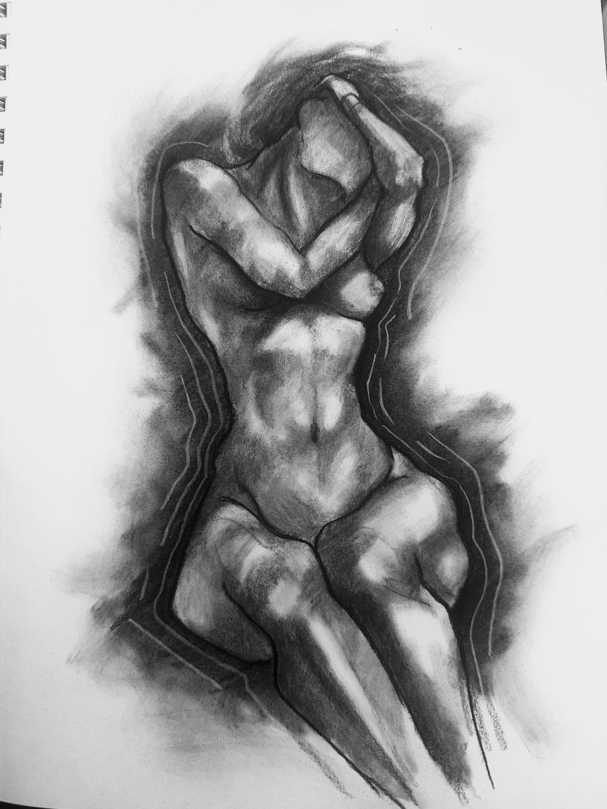
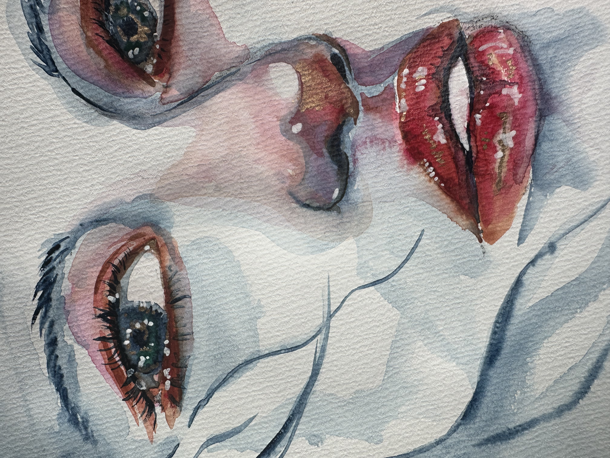
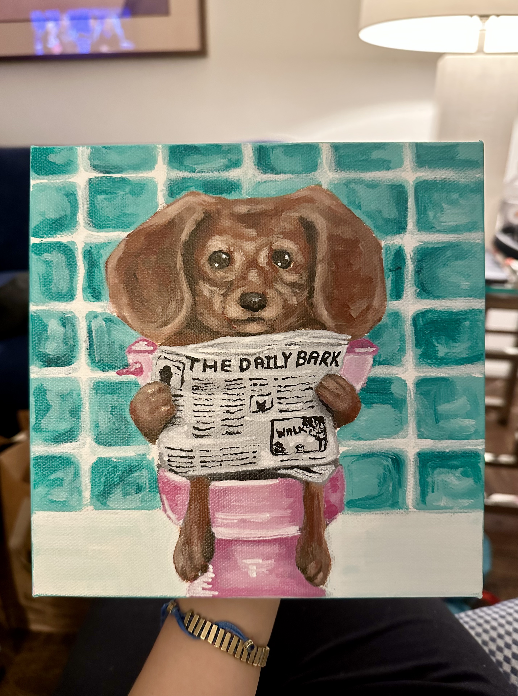

My Portfolio
Hello! I’m an aspiring web developer passionate about learning!
Figure Drawing
This is a figure drawing I did a few months back. I was trying to re-familiarize myself with drawing proportions! I always loved figure drawing so this was a fun mini-project.
Water Color
So I actually hate painting because I am TERRIBLE at color theory. But I recently got a water color palette and I wanted to try out some muted colors! I am pretty happy with how this came out but I would love to keep practicing!
Painting!
Again with the painting, I'm not a fan but practice makes perfect! I always find that if I'm struggling with a new skill, it helps to mix it with something you enjoy. So I love dogs and decided to make a silly painting of a dog reading a newspaper on the toilet. I struggled with mixing colors BUT I had fun anyway because it was a subject I liked!
